Langkah Pertama
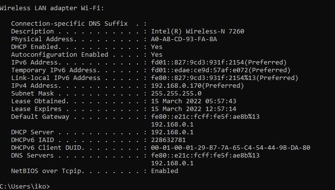Cek ip address di command prompt
Langkah Kedua
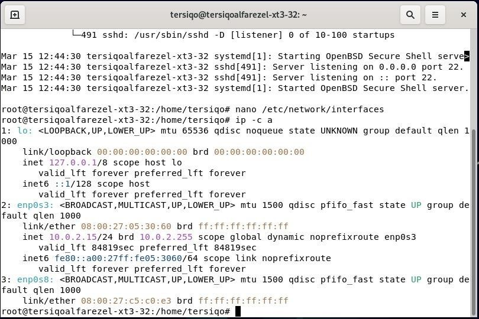Ketik ip -c a dan enter dan lihat enp0s3 Ketik nano /etc/network/interfaces lalu enter
Langkah Ketiga
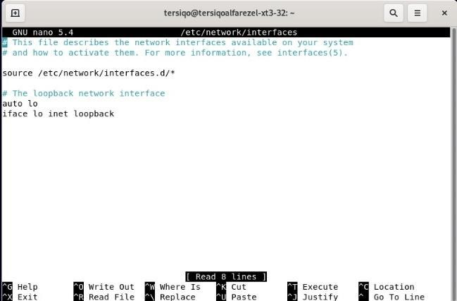Langkah Keempat

Ketik auto enp0s3 Ketik iface enp0s3 inet static Ketik ip address kalian tapi oktat ke empat diganti bebas Ketik subnetmask Ketik gateway
Langkah Kelima
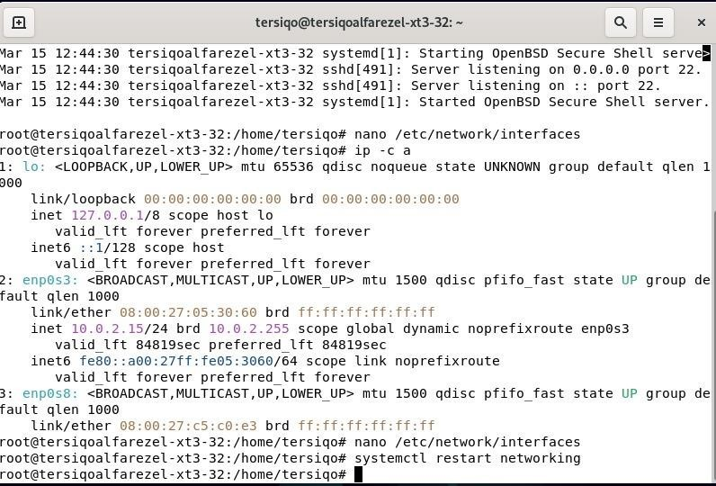Ketik systemctl restart networking
Langkah Keenam
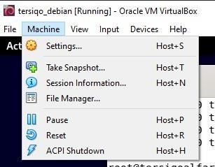Klik machine dan pilih
Langkah Ketujuh
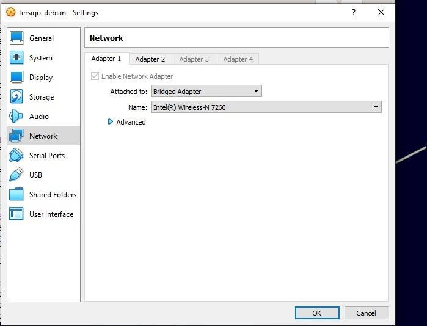Pilih network dan ganti NAT menjadi bridged adaptor
Langkah Kedelapan
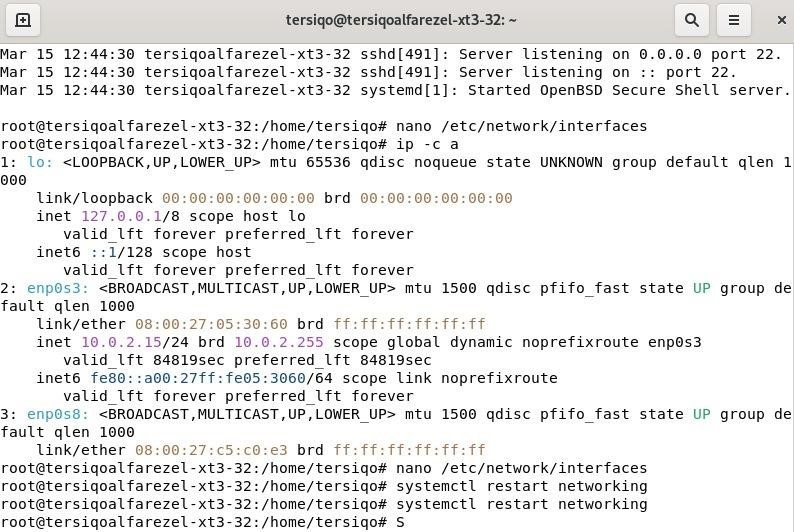Ketik systemctl restart networking
Langkah Kesembilan
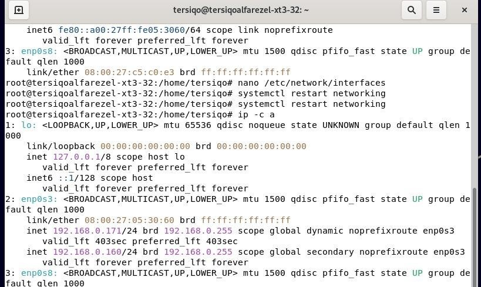Ketikkan ip -c a dan lihat nomer 2 apakah ip sudah terganti sesuai ip yang diinginkan 10
Langkah Kesepuluh
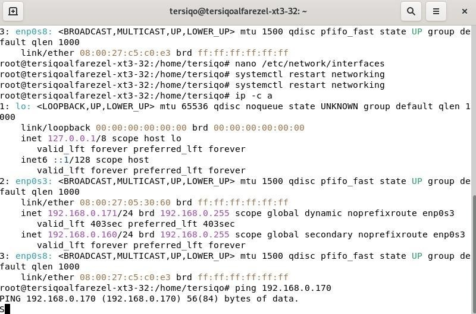Ketik ping ip windows dan enter
Langkah Kesebelas

Ketik ping ip Debian kalian
Langkah Keduabelas
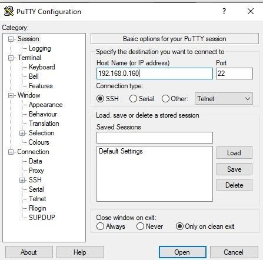Download putty dan masukkan ip Debian kalian lalu klik open
Langkah Ketigabelas

Pilih accept
Langkah Keempatbelas

Ketik nama Debian kalian yaitu nama dibelakang @ dan masukkan paswordnya juga
Langkah Kelimabelas
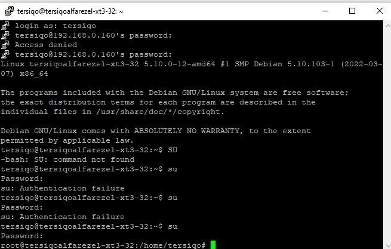Ketik su dan enter dan masukkan password root
Langkah Keenambelas
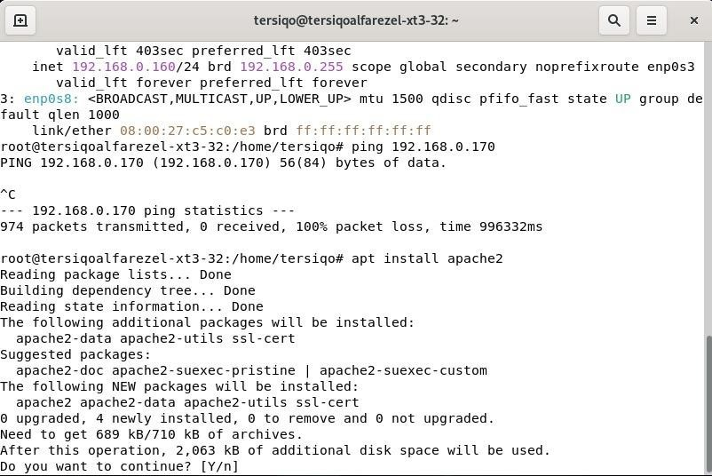etikkan apt install apache 2 enter lalu ketik y
Langkah Ketujuhbelas
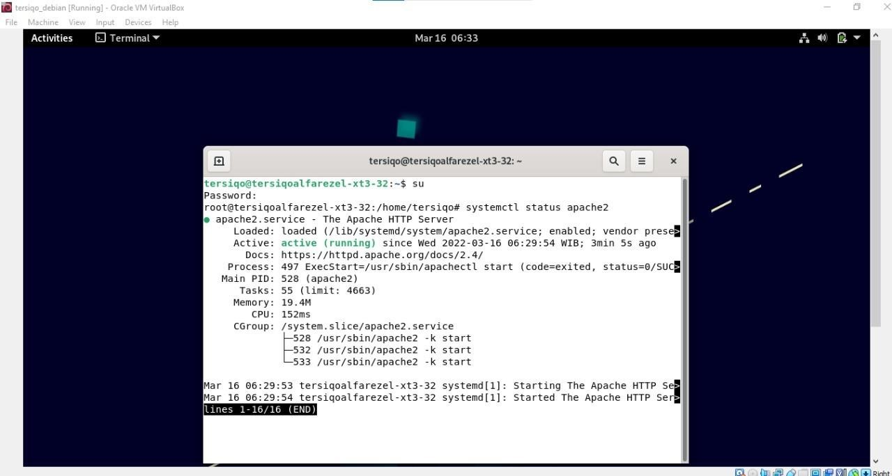Ketik systemctl status apache2 untuk melihat apakah apache2 sudah terinstal
Langkah Kedelapanbelas
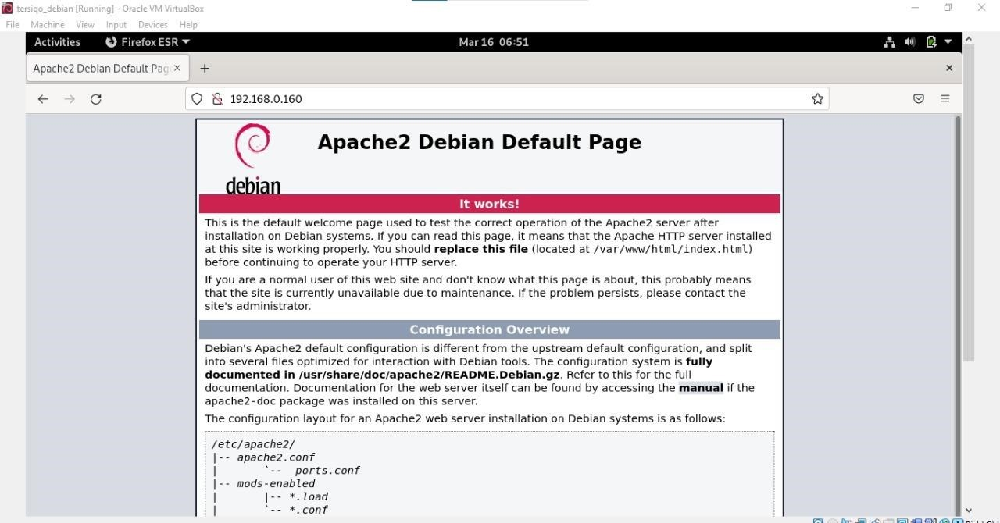Masuk ke firefox dan ketikkan ip Debian kalian